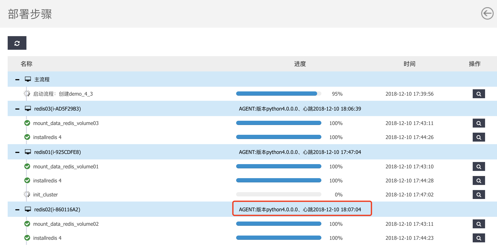
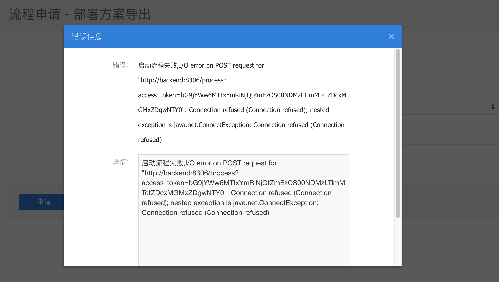
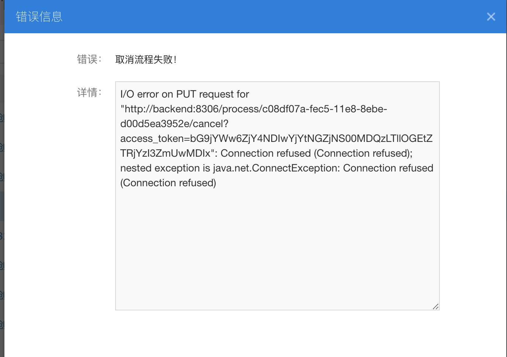

部署任务创建成功，但是不执行
问题描述： 部署任务已经正常创建，但是部署步骤一直未运行，例如下载文件或者挂载存储卷的脚本一直未运行
排障步骤：
检查是否安装部署agent，并且agent已运行
2.0.0.0以后的agent安装目录同ec2
- windows在
C:\Program Files\Bingosoft\DeployAgent,检查服务中BingosoftDeployAgent的运行状态 - linux在
/usr/local/deploy-agent，运行ps -ef| grep agent,查看是否存在/usr/local/deploy-agent的进程
- windows在
检查agent的日志
查看logs目录下日志文件，常见的问题有：
- 无法连接到169.254：部署agent在kvm中需要访问169.254.169.254获取meta信息
- 无法连接到SIP部署服务端：部署agent需要连接到SIP的8301和8201端口进行指令获取和文件下载
通过页面查看agent的状态 
是否存在Agent的升级任务或者IT策略下发任务
部署服务会自动升级Agent到最新的版本，在Agent低于指定版本时，不会下发部署指令。
| Agent版本 | SIP版本 | 编程语言 |
|---|---|---|
| 1.0.0.2 | <3.6.7 | Java |
| 2.0.0.0 | >=3.6.7,<=4.0 | Python |
| 4.0.0.0 | 4.1 | Python |
提交部署失败
工作流版本提交部署时，如报一下的错误，表示web程序无法连接后台服务的8306端口。
- 如web和后台服务分开部署，要检查两者的端口是否可达
- 需要检查river服务是否启动，
service river status

取消、删除、结束流程失败
工作流版本提交部署时，如报一下的错误，表示web程序无法连接后台服务的8306端口。
- 如web和后台服务分开部署，要检查两者的端口是否可达
- 需要检查river服务是否启动，`service river status
